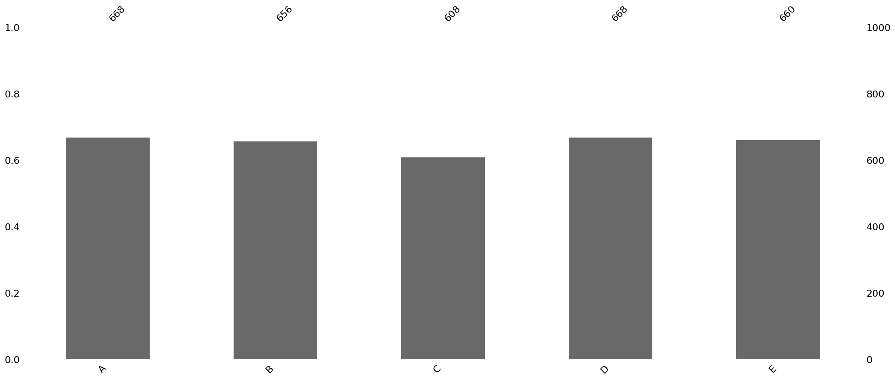
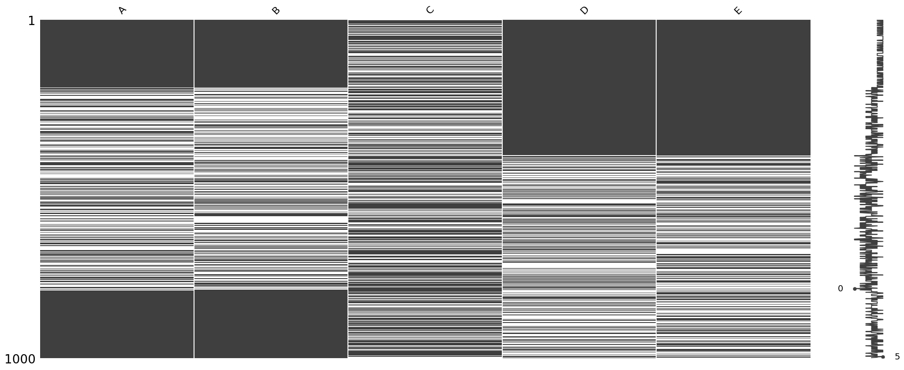
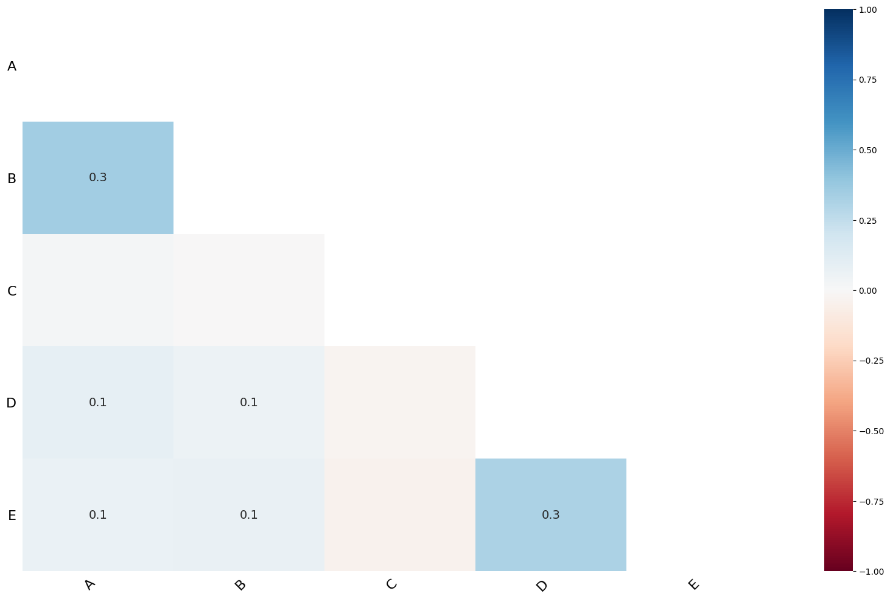
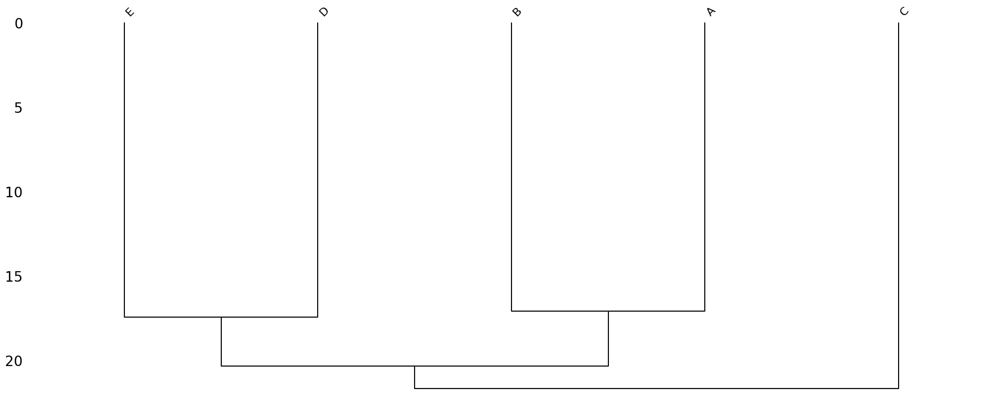

# !pip install missingno해당 자료는 전북대학교 최규빈 교수님 2023학년도 2학기 빅데이터분석특강 자료임
04wk-014: 결측치 시각화, msno
최규빈
2023-09-26
1. 강의영상
https://youtu.be/playlist?list=PLQqh36zP38-yaVoY_NIsrKBagbJHUqG-W&si=xfSB2c5HJtYxMq-5
2. Import
import numpy as np
import pandas as pd
import missingno as msno3. 데이터
df = pd.read_csv("https://raw.githubusercontent.com/guebin/MP2023/main/posts/msno.csv")
df| A | B | C | D | E | |
|---|---|---|---|---|---|
| 0 | 0.383420 | 1.385096 | NaN | -0.545132 | -0.732395 |
| 1 | 1.084175 | 0.080613 | -0.770527 | -0.272143 | -0.749881 |
| 2 | 1.142778 | 1.258419 | NaN | -0.072007 | -0.440757 |
| 3 | 0.307894 | 0.521400 | 0.446974 | 0.329530 | -1.457388 |
| 4 | 0.237787 | 0.132401 | -0.516630 | 0.177995 | 0.416182 |
| ... | ... | ... | ... | ... | ... |
| 995 | 0.041092 | -1.308165 | 1.085820 | 1.136210 | NaN |
| 996 | -1.286358 | 1.547987 | NaN | -0.174334 | -0.579486 |
| 997 | 0.710257 | 1.764058 | NaN | -0.353928 | NaN |
| 998 | -1.908729 | -0.804691 | NaN | NaN | -0.066739 |
| 999 | 0.650026 | 2.206549 | NaN | -0.919945 | NaN |
1000 rows × 5 columns
4. 결측치 숫자 파악
df.shape(1000, 5)A. df.info()
df.info()<class 'pandas.core.frame.DataFrame'>
RangeIndex: 1000 entries, 0 to 999
Data columns (total 5 columns):
# Column Non-Null Count Dtype
--- ------ -------------- -----
0 A 668 non-null float64
1 B 656 non-null float64
2 C 608 non-null float64
3 D 668 non-null float64
4 E 660 non-null float64
dtypes: float64(5)
memory usage: 39.2 KBB. msno.bar() <- 결측치 시각화 패키지
msno.bar(df)<Axes: >
5. 패턴파악 및 시각화
A. msno.matrix()
msno.matrix(df)
- 결측치의 패턴이란?
하얀 부분이 결측치가 존재하는 부분
오른쪽에 지ㅣㅈ직… 되어있는 부분이 0~5 에 있는 데이터의 분포를 확인 가능
B. msno.heatmap()
msno.heatmap(df)<Axes: >
숫자가 클수록 비슷한 유형의 결측치라는 것 말한다.
(A,B), (D,E)가 0.3 비슷한 정도를 볼 수 있음
C. msno.dendrogram()
msno.dendrogram(df)<Axes: >